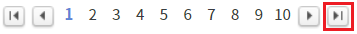

[PageList] 총 페이지 수 설정하기
1개요
총 페이지 수를 설정하는 예제입니다. 이 기능은 함수 'setCount'로 지정할 수 있습니다. 함수가 호출되면 선택된 페이지는 '1'로 초기화됩니다.
2구현된 기능
총 페이지 수 설정하기
3예제 테스트 방법
3.1총 페이지 수 설정하기
STEP 1. 초기 상태를 확인합니다.
예제 영역 [총 페이지 수 설정하기]의 'PageList'를 확인합니다.
'PageList'의 총 페이지 수가 설정되지 않은 상태로 페이지 숫자가 표시되지 않습니다.그림 1.브라우저(Chrome) 실행 예시

STEP 2. 총 페이지 수를 '15'로 설정합니다.
버튼 총 페이지 수를 '15'로 설정하기를 클릭합니다.STEP 3. 실행된 결과를 확인합니다.
페이지 '1'이 선택되며 1~10 페이지가 출력됩니다. 화면에 보여질 페이지 수(속성 'pageSize')가 '10'으로 설정된 상태입니다.
그림 2.브라우저(Chrome) 실행 예시
오른쪽에 구성된 버튼(다음 목록 페이지)을 클릭합니다.
그림 3.브라우저(Chrome) 실행 예시

페이지 '6'이 선택되며 다음 목록이 출력됩니다. 화면에 보여질 페이지 수가 '10'이고 총 페이지 수가 '15'이기 때문에 6~15 페이지가 출력됩니다.
그림 4.브라우저(Chrome) 실행 예시
STEP 4. 총 페이지 수를 '5'로 설정합니다.
버튼 총 페이지 수를 '5'로 설정하기를 클릭합니다.STEP 5. 실행된 결과를 확인합니다.
페이지 '1'이 선택되며 1~5 페이지가 출력됩니다.
그림 5.브라우저(Chrome) 실행 예시
4구현 예시
4.1스크립트로 총 페이지 수 설정하기
'PageList'의 함수 'setCount'를 이용하여 스크립트를 작성합니다. 세부 지정은 아래의 스크립트 예시에 작성되어 있습니다.
스크립트
//예제 파일에서는 스크립트 scwin.btn_exam1_1_onclick, scwin.btn_exam1_2_onclick에 작성되어 있습니다. // PageList 'pgc_exam1'의 총 페이지 수를 15로 설정합니다. pgl_exam1.setCount(15);
5주요 API
setCount( count )